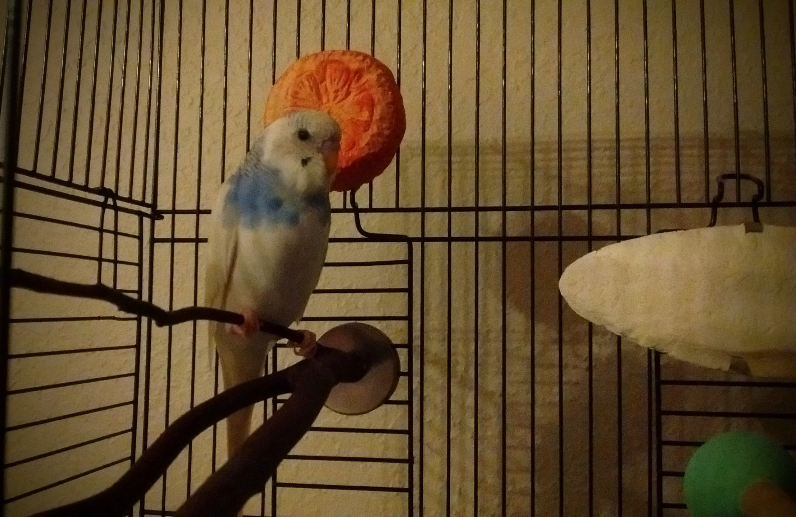

Essential Perches
It is important for budgies to be provided with a variety of perches so that their feet get proper exercise. Whenever I give Apollo’s cage a thorough cleaning (every one or two weeks) I put it back together with a different selection of perches in a different arrangement. There are two perches, however, that I always include in the setup.
The JW Pet Company Insight Wood Perch Bird Accessory, Small is one that I bought with Apollo’s original cage. It is just a simple and small dowel perch that is contoured so it has a variety of widths. It attaches securely to the cage at only one end and is about six inches long, so it can easily be placed anywhere in the cage. It seems to be Apollo’s favourite; he’ll hang out on that perch even if it’s not the highest and doesn’t have a toy nearby, so it must be comfy. It’s made of wood so it helps keep his nails trim and he even uses it to buff his beak sometimes.
The second essential perch is the natural one that you can see in the picture. I bought this one at Petsmart because I wanted to be able to pick one with a good variety of branch sizes. I was excited to find one that had a tiny little branch, because I felt like Apollo sometimes was wanted to clench his feet up a bit more than he could on the standard size perches. I had this theory because sometimes when he was up on top of his cage he would stand balancing with a tight grip on the little wire instead of the dowel perch. And other times he would fly onto the the kabob stick we were using for target training and just want to hang out there like it was a perch. I think I was proven right because he hangs out on that tiny branch often and has become much more dextrous as well.
I added one more staple recently after noticing that Apollo looked like he could use a manicure. I’ve never had to cut his nails, but every once in awhile one will look jagged, like the tip broke off rather than it being worn down. I’m pretty sure I saw him bite one once too (hopefully not because he’s mimicking my bad habit). Also, though the bottoms of his feet looked healthy, he was starting to build up small callouses on the pads of his toes. So I looked into these pedi-perches and decided to try one. It was the smallest one I could find but it’s still quite wide, but budgies like to run on the ground so it’s fine. I attached it to the lower part of the door, so Apollo has access to it whenever he wants, but doesn’t spend too much time on it to avoid over-exfoliation. After just a few weeks his feet are already starting to look like he’s been to a manicurist.